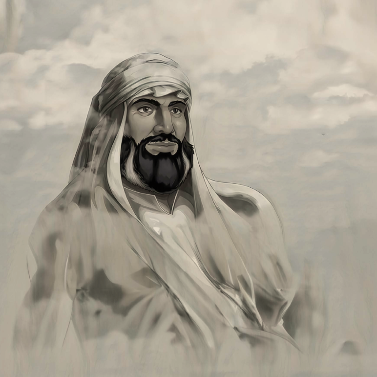

الإمام محمد بن سعود
مؤسس الدولة السعودية الأولى
المزيد
يعد شخصية تاريخية سعودية؛ باعتباره مؤسس دولة ومنشئ وحدة وطنية واجتماعية في منتصف الجزيرة العربية، جعل من الدرعية البذرة الأولى لمشروع الوحدة الوطنية حيث كانت الأساس لدولة امتدت منذ القرن الثاني عشر هجري، حتى توسعت لتشمل نجد، ثم معظم أجزاء الجزيرة العربية